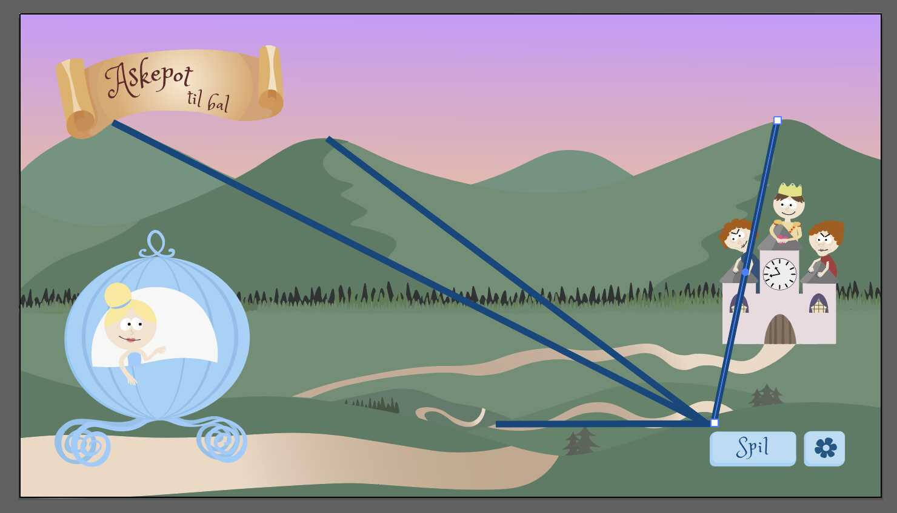
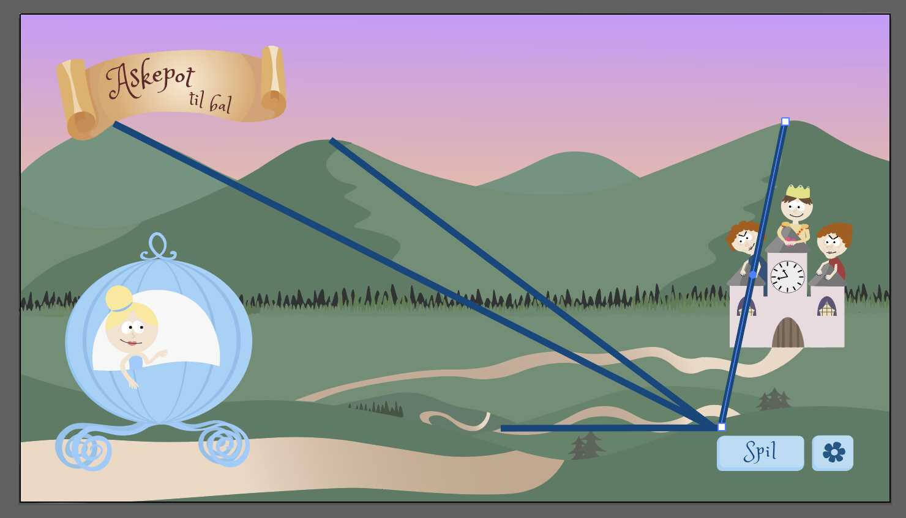

Tema 4
Grundlæggende animation
Opgave 04.01.05 - Assetliste og designdokumentation
I Tema 4 - grundlæggende animation blev jeg introduceret til programmeringssproget JavaScript, som er et sprog der bruges til at laver mere avanceret websites. For at lære sproget at kende, har jeg sammen med CSS animationer skulle kode et spil.
I denne opgave har jeg arbejdet med selve designprocessen af spillet. Jeg har skulle lave en assetliste, som indeholder de elementer der skal bruges i spillet.
Info om opgaven
- Fokus: Designproces
- Gruppe/individuel: Individuel
- Værktrøjer: Adobe Illustrator, HTML, CSS
Krav til opgaven
- Elementer skal være rentegnes i Adobe Illustrator
- Assetlisten skal indeholde diverse skærme, spil- og UI-elementer
- Designdokumentation skal indeholde pitch, inspiration og udvidet styletile
Gruppeopgaver
Individuelle opgaver
- Beskrivelse af ide og papirprototype
- Beskrivelse af stil, moodboard og skitser på figurdesign og titelskærm
- Aktivitetsdiagram til eget spil
- Rentegning af figur-design og titelskærm
 

Process
Jeg har arbejdet med metoder og teorier fra de tidligere temaer, så som idegenerering og kompositionsprincipper, for at komme frem til mit visuelle koncept og design. Jeg tog inspiration i Askepot-historien, da jeg udarbejdet min ide, men selve scenografien og spil-elementerne tog inspiration i stilen fra South Park. Jeg lavede papirprototyper af alle baggrunde, skærme og elementer, og herefter lærte jeg at rentegne mine skitser i Adobe illustrator.
På min startskærm arbejdede jeg meget med linjer i scenografien, der skulle guide brugerens øje ned mod start-knappen. Derudover blev Askepot også placeret i det gyldne snit, da det er hende der er hovedrollen i spillet. Med en lidt mørkere forgrund fik jeg skabt dybde i billedet.
Jeg lærte at udarbejde et aktivitetsdiagram, som skulle beskrive de handlinger og beslutninger der skulle ske i spillet. Aktivitetsdiagrammet er godt at bruge, da det skaber overblik over de valgmuligheder der er i spillet.
Se det endelige resultat assetlisten her
Reflektioner
I denne opgave fik jeg opfrisket mange af de metoder og værktøjer jeg havde lært i det tidligere temaer. Jeg brugte ret lang tid på at øve mig i illustrator, da det ikke var et program som jeg havde særlig meget erfaring med. Ved hjælp af videoer på youtube, og en masse øvelse, kom jeg frem til et resultat jeg var ret tilfreds med. Jeg endte ud med at vælge South Park som stil-inspiration, hvilket var medgørligt, da stilarten er meget flat-design. Næste gang vil jeg gerne udfordre mig selv med noget mere dybde på flere elementer, så de bliver mere livagtige og får større persontræk.
Se hele proces-dokumentationen her